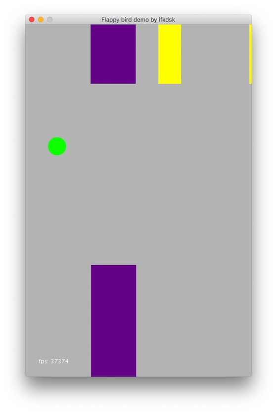

作者 ：刘丰恺
作者博客：若梦浮生
转载需征得作者本人同意
之前试着在Android平台封装了一个轻量级的游戏开发框架JustWeEngine ,因为是轻量级的所以也没想太多，很多地方的处理都不太够，比如关于碰撞事件的处理，就是一个简单的On2的遍历，前一阵还被吐槽了233333。
其实优化On2碰撞的思路是一而贯之的，就是不去处理根本不可能撞在一起的对象。所以就文章讨论一下我了解的在游戏开发中经常被使用的碰撞机制。
示例图

图示是使用了四叉树进行碰撞判断的一个图示，变成紫色的是从四叉树中拿取的离我最近的可能碰撞对象，这里我们只需要处理最近的四个对象就可以了，这个demo感谢FriceEngine的demo。
物体分组
对Engine所加载的对象进行分层处理，每层维护一个对象列表，对可能根本不需要进行碰撞处理的对象不去处理，不会发生碰撞的层也不去处理，这样我们的O2的复杂度没变，但是我们减少了很多无用的碰撞对象，而我们想要他们碰撞也可以非常简单的切换。
我在JustWeEngine里面就试着用了物体分组的方式
public enum LayerType {
Button,
Default
}
public interface LayerListener {
boolean Touch(MotionEvent event);
void Collision(BaseSub baseSub);
void Update();
void Draw();
}
protected LayerType layerType;
protected String layerName;
// Layer的刷新范围也是绘制范围
protected Rect layerField;
protected Screen layerScreen;
public Layer(LayerType layerType, Screen layerScreen, Rect layerField) {
this.setLayerType(layerType);
this.layerField = layerField;
this.layerScreen = layerScreen;
}
通过引入Layer的概念，把不同的对象放到不同的组里面，分别进行碰撞处理。
private ArrayList<Layer> e_layers;
public interface ScreenListener {
void Init();
void Load();
void Update();
void Touch(MotionEvent event);
}
然后在Screen类里面就不再处理碰撞事件，而是统一的在Layer中进行处理。
但是这种东西的缺点也很明显，就是On2没有从实质上被解决，只是缩小了基数，对于一层的数据量大的时候仍然无效。
屏幕分割
相比于通过对象的遍历拿到具体坐标进行对应的比较，使用屏幕分割明显是一种更为正常的方式，通过将屏幕分割成一些小的格子，每个格子管理在自己区域内的操作对象。
主要的碰撞检测方法是划分区域的时候，把格子放大到超过所操作对象的最大值，使格子能够包含最大的对象（以中心点来判定），然后的判定逻辑就十分简单了，每个格子内部进行比较判断是否有碰撞事件，然后在邻近的格子之间进行判断碰撞事件。这里有的人是比较临近各方位的八个方块，但其实遍历的话从左上角开始，只需要比较右侧，下方，和右下的放块就可以了。
那么如何判断物体在哪个方块呢，使用简单的屏幕分割是没有办法动态处理方块分配的，所以在每一帧的开始都会进行一次On的遍历分配，其实这也是一个耗时操作。
四叉树
相比于屏幕分割的方法，四叉树的方法会更加灵活一些。四叉树的构成大概遵循这样几个条件：
- 每个非叶子节点有四个节点
- 四个节点对应一个区域的四个象限，每个象限可以再分
- 在象限内的对象被归属于此节点，跨象限的对象被归到父节点
一个简单的四叉树实现如下：
(下面的代码有一点Kotlin的风格，但是对于Javaer 是能简单看懂的程度)
import org.frice.game.obj.PhysicalObject
import org.frice.game.utils.quad.RectF
import java.util.*
/**
* QuadTree
* @author lfkdsk
* Created by liufengkai on 2016/10/4.
*/
class QuadTreeKT {
val MAX_OBJECTS = 3
val MAX_LEVELS = 5
var level: Int
private var bounds: RectF
private val objects: ArrayList<PhysicalObject>
private val nodes: Array<QuadTreeKT?>
constructor(level: Int, bounds: RectF) {
this.level = level
this.bounds = bounds
}
init {
this.nodes = kotlin.arrayOfNulls<QuadTreeKT>(4)
this.objects = ArrayList<PhysicalObject>()
}
fun clear() {
objects.clear()
for (i in nodes.indices) {
if (nodes[i] != null) {
nodes[i] = null
}
}
}
private fun split() {
// width & height
val subWidth = (bounds.width() / 2)
val subHeight = (bounds.height() / 2)
// x & y
val x = bounds.left
val y = bounds.top
// split to four nodes
nodes[0] = QuadTreeKT(level + 1, RectF((x + subWidth), y, subWidth, subHeight))
nodes[1] = QuadTreeKT(level + 1, RectF(x, y, subWidth, subHeight))
nodes[2] = QuadTreeKT(level + 1, RectF(x, (y + subHeight), subWidth, subHeight))
nodes[3] = QuadTreeKT(level + 1, RectF((x + subWidth), (y + subHeight), subWidth, subHeight))
}
/**
* 获取rect 所在的 index
* @param rectF 传入对象所在的矩形
* *
* @return index 使用类别区分所在象限
*/
private fun getIndex(rectF: PhysicalObject): Int {
var index = -1
val verticalMidpoint = bounds.left + bounds.width() / 2
val horizontalMidpoint = bounds.top + bounds.height() / 2
// contain top
val topQuadrant = rectF.y < horizontalMidpoint && rectF.y + rectF.height < horizontalMidpoint
// contain bottom
val bottomQuadrant = rectF.y > horizontalMidpoint
// contain left
if (rectF.x < verticalMidpoint && rectF.x + rectF.width < verticalMidpoint) {
if (topQuadrant) {
index = 1
} else if (bottomQuadrant) {
index = 2
}
// contain right
} else if (rectF.x > verticalMidpoint) {
if (topQuadrant) {
index = 0
} else if (bottomQuadrant) {
index = 3
}
}
return index
}
/**
* insert object to tree
* @param rectF object
*/
fun insert(rectF: PhysicalObject) {
if (nodes[0] != null) {
val index = getIndex(rectF)
if (index != -1) {
nodes[index]?.insert(rectF)
return
}
}
objects.add(rectF)
if (objects.size > MAX_OBJECTS && level < MAX_LEVELS) {
// don't have subNodes
// split node
if (nodes[0] == null) {
split()
}
var i = 0
while (i < objects.size) {
val index = getIndex(objects[i])
if (index != -1) {
nodes[index]?.insert(objects.removeAt(i))
} else {
// don't in subNode save to parent node.
// eq: object on line
i++
}
}
}
}
/**
* return all the object collision with the object
* @param returnObjects return list
* *
* @param rectF object
* *
* @return list of collision
*/
fun retrieve(returnObjects: ArrayList<ArrayList<PhysicalObject>>, rectF: PhysicalObject): List<List<PhysicalObject>> {
val index = getIndex(rectF)
if (index != -1 && nodes[0] != null) {
nodes[index]?.retrieve(returnObjects, rectF)
}
returnObjects.add(objects)
return returnObjects
}
}
上面的这段代码比较的对象是一个叫PhysicalObject的实体对象，当然这是有耦合的问题，但是细读代码会发现其实我们只要提供一个带有坐标（相对于游戏世界）的对象就可以了，下面我们来解释一下这段代码。
首先，MAX_OBJECTS 和 MAX_LEVELS 定义了这颗四叉树的所能存储的最多对象和最高层级。每个层级节点含有一个RectF对象保存当前层级对应的屏幕区域，每个节点最多可以被分为四个子节点（要么不分作为叶节点，要么分成四个对应四个象限）。
接下来看方法，我们先从最重要的插入函数开始：
fun insert(rectF: PhysicalObject) {
if (nodes[0] != null) {
val index = getIndex(rectF)
if (index != -1) {
nodes[index]?.insert(rectF)
return
}
}
objects.add(rectF)
if (objects.size > MAX_OBJECTS && level < MAX_LEVELS) {
// don't have subNodes
// split node
if (nodes[0] == null) {
split()
}
var i = 0
while (i < objects.size) {
val index = getIndex(objects[i])
if (index != -1) {
nodes[index]?.insert(objects.removeAt(i))
} else {
// don't in subNode save to parent node.
// eq: object on line
i++
}
}
}
}
插入一个可以处理的对象的时候，首先判断是否有子对象，如果有子对象的话，就通过getIndex()方法获取次对象所在的象限，并直接插入。如果我们没有子节点，就会把这个对象加入到此节点的List中，当此节点的存储对象满了的时候就会进行分裂，并通过一个循环将此节点的对象“下放”到四个子节点中。
我们接着来看分裂splite()分裂的过程特别的简单，就是把此节点对应的RectF分裂成四个子画布，对应的生成
四个子节点。
刚才我们在这几个函数里使用了一个getIndex()函数：
private fun getIndex(rectF: PhysicalObject): Int {
var index = -1
val verticalMidpoint = bounds.left + bounds.width() / 2
val horizontalMidpoint = bounds.top + bounds.height() / 2
// contain top
val topQuadrant = rectF.y < horizontalMidpoint && rectF.y + rectF.height < horizontalMidpoint
// contain bottom
val bottomQuadrant = rectF.y > horizontalMidpoint
// contain left
if (rectF.x < verticalMidpoint && rectF.x + rectF.width < verticalMidpoint) {
if (topQuadrant) {
index = 1
} else if (bottomQuadrant) {
index = 2
}
// contain right
} else if (rectF.x > verticalMidpoint) {
if (topQuadrant) {
index = 0
} else if (bottomQuadrant) {
index = 3
}
}
return index
}
这函数的方法也很简单，我们通过对游戏操作的对象的位置，然后通过中心来判断对象在当前层画布的哪个象限。
（这里有个小问题，后面会讲到）。
至此，我们构建四叉树的工作就完事了，我们需要做的，就是在这帧绘制处理碰撞前，把所有的对象注入四叉树，然后我们来做下一步，根据对象，来获取可能与之碰撞的对象，此时我们的O (n^2)的搜索降低到一个O(n)了，并且我们的搜索对象也少了很多。如果我们判断碰撞的对象仅仅只有控制对象一个，这个碰撞的解决办法就会更为合适。
我们在将使用retrieve()函数来获取可能碰撞的对象：
fun retrieve(returnObjects: ArrayList<ArrayList<PhysicalObject>>, rectF: PhysicalObject): List<List<PhysicalObject>> {
val index = getIndex(rectF)
if (index != -1 && nodes[0] != null) {
nodes[index]?.retrieve(returnObjects, rectF)
}
returnObjects.add(objects)
return returnObjects
}
输入一个用于返回的数组和用于判断的对象，获取所在象限逐层深入去拿和自己最接近象限的对象，再通过相对位置去判断是不是真的进行了碰撞。
现在我们来说说刚才那个问题，那个getIndex()的问题在于并不是所有的对象都能正正好好的被安排在象限里，这时候我们就不得不想个办法去处理这些”卡在线上”的对象，这里我给出两个方法去处理：
- 第一种就简单的把没办法处理的对象放在父节点的对象池里。
- 第二种我们的判断就会更精细一点，我们把卡在线上的实体块按照象限分成几块（x，y轴）然后把分出来的对象做好标记，要保证能判断出是一个对象的拆分，然后把分出来的对象，重新getIndex插入，就可以避免了卡线的问题。
动态四叉树
上面是用了四叉树的方式，但是也有一个不足，这个不足在对象少的时候不太明显，但是在对象多的时候，就和发现每一帧都会进行一次四叉树的销毁和重绘，这会消耗大量的系统资源。所以说我们应该去想一种方法去减少四叉树的创建消耗，这里很明显的一点，就是一般的游戏是16ms绘制一帧，在这16ms中其实并没有太多的对象作出太大的移动，甚至还在同一个象限，所以说我们浪费就浪费在这个地方了。那么我们就对四叉树的优化有了一个思路，我们只要对和原来象限不一样的对象进行重新插入就可以了，这里我们可以先判断一下这个对象，在不在原来的象限：
private fun isInner(ob: PhysicalObject, rectf: RectF): Boolean {
return ob.x >= rectf.left
&& ob.x + ob.width <= rectf.left + rectf.w
&& ob.y >= rectf.top
&& ob.y + ob.height <= rectf.top + rectf.h;
}
这个就很简单了，仅仅是一个矩形的判断。
最后使用refresh()方法对四叉树进行刷新：
fun refresh(root: QuadTreeKT) {
var ob: PhysicalObject
var index: Int
for (i in objects) {
ob = i
index = getIndex(i) // get Index
if (!isInner(ob, bounds)) {
// re-insert
if (this != root) {
root.insert(ob)
} else if (nodes[0] != null) {
this.nodes[index]?.insert(ob)
}
}
}
nodes.forEach { i ->
i?.refresh(root)
}
}
每次对object对应的的bounds判断是否包含，来判断是否已经脱离了原来的象限，如果脱离了就重新插入，接着逐层的深入去refresh就可以了。
这篇文章我们学到了什么？
- 实体分组减少碰撞对象
- 屏幕分块减小了碰撞判断的区域
- 四叉树以及修改版的动态方法去获取
作者 ：刘丰恺
作者博客：若梦浮生
转载需征得作者本人同意